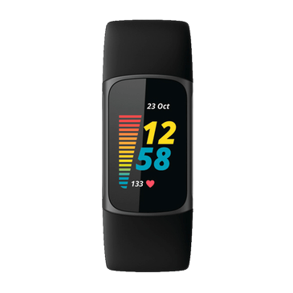
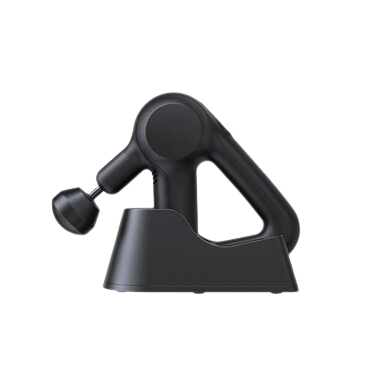

The fitbit is an activity tracker that tracks your daily activities.
It can track things such as walking, running swimming cycling or other activities.
The fitbit can track those activities and store them in the fitbit app on your phone.
The newest models can even track your stress levels and heartrate.
You can also have on screen workout, breathing meditations and if
you dont feel like grabbing your credit card, you can even pay with your fitbit.

order product
DALL•E 2 can create all sorts of realistic/art images just with a simple sentence.
You can create anything you could imagine. You can even expand images in their editor.
DALL•E 2 is currently on a wishlist where only the big companies can get their hands on the AI.
But DALL•E is currently open to the public and is available to everyone.
You can even upload your own photos into the AI and choose what you want to be changed.
Do you want to have a pink flamingo floatable next to the pool in the picture?
With DALL•E you can do that!
more info
The Theragun Prime is a massaging gadget that people can use after a long workout.
It has 4 different attachments you can use on the Theragun Prime.
The Theragun Prime also has a maximum force of 15KG.
With the 5 different speed options, and a triangulair design, you can even get the hard to reach spots.
With the Theragun Prime you will get 4 attachments, an adapter and a bag to store the Theragun Prime away.

order here